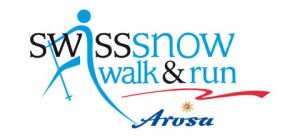
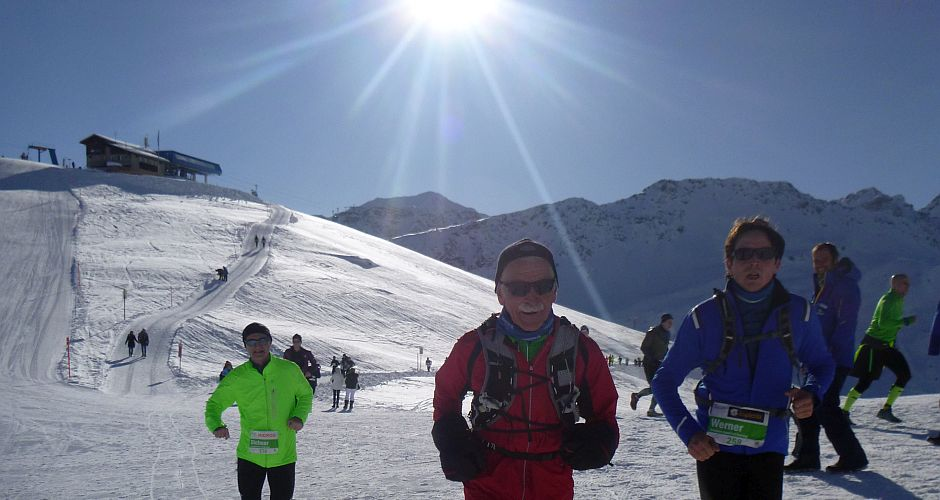
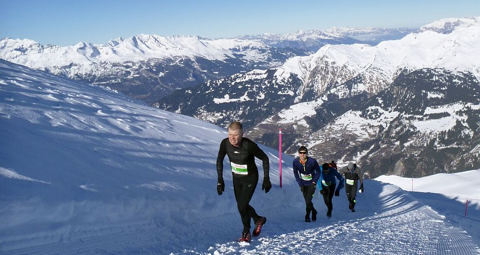
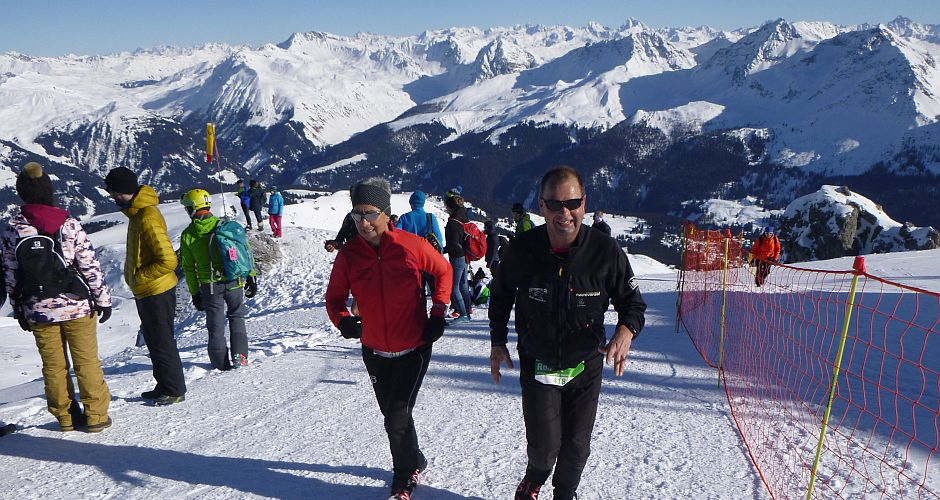
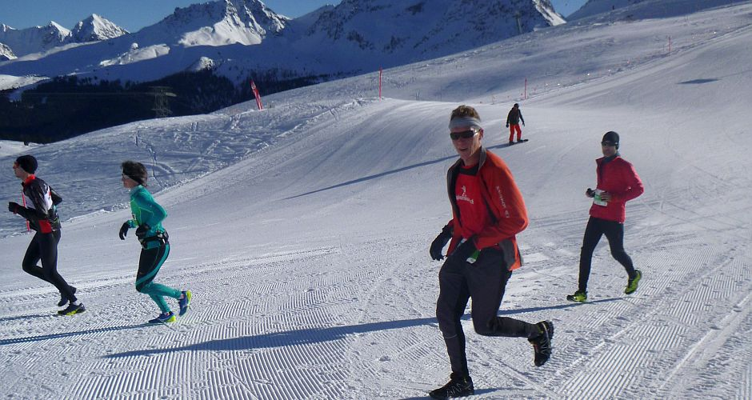
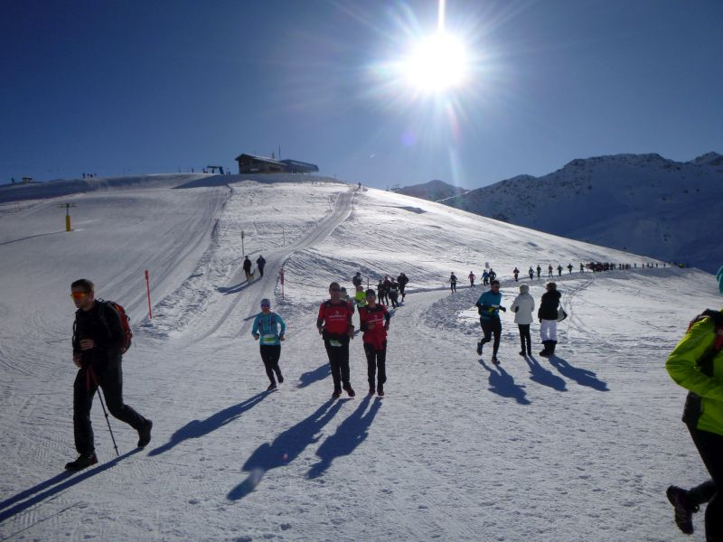
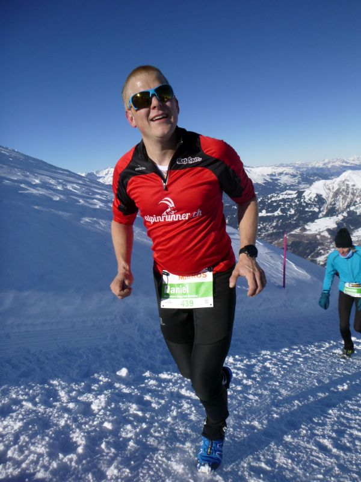
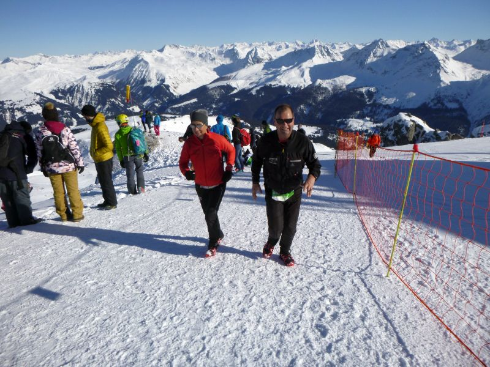

Alpinrunner
Swiss Snow walk & run

Samstag, 12. Januar fand der 15. Snow walk & run in Arosa statt.
Wir Alpinrunner liessen sich das nicht entggehen und starten auf den verschneiten Strecken von 6,1 Km bis 21,1 Km
folgende Alpinrunner- Freunde haben sich angemeldet
- Marco und Petra Jäger Zuschauer, Fan's
- Dani Zähner Weisshorn Snowtrail
- Giacomo Del Curto Weisshorn Snowtrail
- Cesare Scesa Weisshorn Snowtrail
- Barbara Miller Weisshorn Snowtrail
- Maria Conrad Weisshorn Snowtrail
- Röbi Conrad Weisshorn Snowtrail
- Ruedi Wirz Weisshorn Snowtrail
- Isabella Lüönd Weisshorn Snowtrail
- Heinz Joos Weisshorn Snowtrail
- Bea Altmann Weisshorn Snowtrail
- Daniel von Euw Weisshorn Snowtrail
- Ursula Baer Halbpmarathon
- Michel Zogg Halbmarathon
- Jean-Marie Zogg Halbmarathon
- Fabian Rüfenacht Halbmarathon
- Andres Rüegg Halbmarathon
- Marcus Federspiel Long Distance Running
- Dorothée Haller Federspiel Long Distance Running
Bilder vom Snowtrail 2018
-

-

-

-

-

-

-
